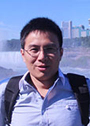

坚强成长让理想飞翔
我是来自外国语学院2008级英语（语言文学）专业的牛鸿生。得知了即将组建东北师范大学第十二届“理想与成才”报告团的通知后，激动不已，因为从入学之初我就对其有所了解，同时也一直非常渴望能够成为其中的一员，所以现在自荐申请加入本届“理想与成才”报告团。
一、大一，寻找榜样
2008年，我从千里之外的江苏省来到了东北师范大学，初到学校，一切都是陌生的，但是绝不虚度大学时光的决心推动了我迅速地适应了环境，并开始规划自己的大学生活。一直以来，我都喜爱阅读名人传记，探寻他们的轨迹，然后反观自身的发展路径。正是这样的兴趣启发我去寻找大学里优秀的前辈，研究他们的成长之路，从而科学地规划自己的大学生活。通过向老师和学长、学姐求教，我第一次听说了理想与成才报告团，通过阅读能够找到的相关资料，我对如何规划自己的大学生活有了清晰的认识。让我印象最深刻的是我们学院的仇云龙老师，因为一来是本学院的，成长环境更加类似；二来仇老师当时正好是我们的英语实践语音课程的任课教师，每周都能有一次近距离的接触。当然，我也认真阅读了其他“理想与成才”报告团成员的成才故事。总结起来，我发现他们不仅在自己的专业领域都出类拔萃，同时在其他方面亦有建树。
一、大一，寻找榜样
2008年，我从千里之外的江苏省来到了东北师范大学，初到学校，一切都是陌生的，但是绝不虚度大学时光的决心推动了我迅速地适应了环境，并开始规划自己的大学生活。一直以来，我都喜爱阅读名人传记，探寻他们的轨迹，然后反观自身的发展路径。正是这样的兴趣启发我去寻找大学里优秀的前辈，研究他们的成长之路，从而科学地规划自己的大学生活。通过向老师和学长、学姐求教，我第一次听说了理想与成才报告团，通过阅读能够找到的相关资料，我对如何规划自己的大学生活有了清晰的认识。让我印象最深刻的是我们学院的仇云龙老师，因为一来是本学院的，成长环境更加类似；二来仇老师当时正好是我们的英语实践语音课程的任课教师，每周都能有一次近距离的接触。当然，我也认真阅读了其他“理想与成才”报告团成员的成才故事。总结起来，我发现他们不仅在自己的专业领域都出类拔萃，同时在其他方面亦有建树。
由于这些前辈们的成功事迹的激励，我倍受鼓舞，给自己提出了综合发展、全面进步的目标，决心一定要在思想塑造、知识学习、科研创新、社会实践、学生工作、志愿服务等多个方面都力求卓越。
二、大二、大三，见贤思齐
有了生活的目标，也就有了努力的方向和前进的动力。三年多的大学生活已经过去了，我确实也没有违背当初对自己的承诺。
在思想方面，我一直追求上进，现为本校“优秀学生党员百人团队”中的一员，并两次获得“优秀学生党员”荣誉称号。目前作为东北师范大学学生会主席，更是充分利用这个平台，为广大同学学习党和国家的方针政策，畅通渠道与途径，比如为纪念五四青年节与中国共产党建党九十周年，我领导组织了“党史进校园”系列报告会等活动。在2011年3月份，我很荣幸地被选拔参加2011年吉林省“百期万名大学生骨干”培训班，同时代表本校参加了“寻访红色之旅，重温革命历史”的社会实践活动，认真学习了马克思主义中国化的最新成果，自觉用中国特色社会主义理论武装头脑，极大地提高了自身的思想政治素质。
在专业学习方面，我学习成绩一直名列前茅。在大一、大二学年都取得了专业第一名的成绩，并获得了国家奖学金、校长奖学金、学有专长奖学金等。我课上能与老师积极互动，勤于思考，善于提问，有很强的独立思考能力，同时，我不仅注重书本知识的学习，而且积极主动参加各种专业知识竞赛，曾代表学院参加第十五届“外研社·中国银行杯”全国英语辩论赛，虽然最终以一分之差无缘三十二强，但这依然是一次激情的尝试和宝贵的体验。
同时，在入学之初，我被“法律是人类最伟大的发明。别的发明让人类学会驾驭自然，而法律的发明，则令人类学会如何驾驭自己”这句名言所深深地打动，开始对法学产生了浓厚的兴趣。所以，在过去的三年里，我在坚持学好英语专业的同时，自学法律相关知识，了解法律相关职业，曾先后阅读学习过《寻找法律的印迹》、《中国大律师》、《法律之门》、《法理学》、《法律逻辑学》、《民法学》、《刑法学》、《国际经济法教程》、《国际法》、《法治及其本土资源》等一系列书籍。在学习的过程中，我也在反复思考如何将所学的英语专业与有浓厚兴趣的法学相结合。
在科研方面，我努力培养自己缜密的思维和保持强烈的求知欲。我参与了2008年度项目名称为“师范生的观念与学科知识的建构——基于东北地区初中外语教学现状的调查研究”的国家大学生创新性实验计划项目，积极投身科研实践活动，该项目目前已成功结题，其中本人参与完成的该项目的报告成果曾获得第三届东北师范大学“家曦杯”课外学术科技作品竞赛优秀奖。此外，我曾在2011年第03期的全国中文核心期刊《现代教育科学》发表了参与撰写的《高校英语专业“全方位进阶型”学科竞赛体系构建的实践探索——基于广义的知识观》一文。
在学生工作方面，我的表现更是得到了领导、老师与同学的肯定。我曾先后担任班级组织委员、蓝鸟文学社外联部部长、年级长、院学生会主席、校学生会主席等职务。在工作中，我能够很好地协调学习与工作、老师与同学等多种关系，有很强的组织协调能力。在担任院、校学生会主席期间，凭借科学组织和团结协作，带领学院同学在第四十七届运动会上创造了多年来的最佳成绩，对迎新、纳新、教师技能大赛等一系列活动以及换届选举进行了创新与改革，为本学院的学生会工作带来了积极的改变。同时我也曾领导组织过学生会的其他一系列活动，主要包括学生会的经典品牌活动，如：主持人大赛、英语十佳大赛、“学院杯”外语短剧大赛、教师技能大赛、“21世纪杯”全国英语演讲比赛东北师范大学赛区和吉林省赛区决赛、东北师范大学“双百论坛”系列报告会、东北师范大学趣味运动会、东北师范大学节能节水宣传知识竞赛等一系列大型活动，这些活动受到了老师和同学们的一致好评。
在社会实践方面，我在大一学年暑假领导组织并参与了全年级的走进城乡百所中小学，进行城乡教育现状的调研，在本次社会实践活动中参与撰写的报告被评为“优秀调研报告”。在大二学年暑假，我组织并参与了长春市永吉街道献爱心活动，无偿为农民工家庭的留守儿童讲解英语。作为年级长，我还积极配合辅导员老师，带领年级同学走出校园，开展了“情系灾后永吉，牵手援建助学”等一系列社会实践活动。在今年暑假，我去了长春的一家律师事务所——吉林上维律师事务所，从事律师助理的工作，对我感兴趣的律师职业进行了初步的了解与研究，并参与了几起案件的诉讼过程，经过两个月真刀真枪的实习，我对这份职业有了较为清晰的认识。
在志愿服务方面，我曾任东北师范大学厚普公益学校英语教研组组长兼英语教师，利用周末时间，义务为长春市及其周边地区贫困家庭的孩子讲授英语长达两年，多次受到长春市慈善会、公益学校的嘉奖，曾先后两次获得长春市志愿服务“先进个人”荣誉称号及东北师范大学厚普公益学校“优秀教师”荣誉称号，并作为该校首批明星教师，面向全校展示授课技能。同时，我还积极参加组织各类大型赛事，从事志愿服务工作，为此也曾被授予第三届“东芝杯·中国师范大学理科师范生教学技能创新大赛”“杰出志愿者”、“21世纪杯”全国英语演讲比赛吉林省赛区决赛“优秀志愿者”等荣誉称号。
三、大四，总结反思
转眼进入大四，我有幸同时获得了北京外国语大学国际法专业硕士研究生的接收资格和本校的外推名额，从而毕业后可以去北外攻读我一直向往的国际法专业。毕业在即，我也在对我的大学生活进行反思和总结。我很庆幸，在大一的时候，自己能够充分利用时间，把握机会，虚心请教，为大学生活设立了目标；大二的时候，我能够积极参加各种活动，开拓视野，提高能力，为大学生活打下了坚实的基础；大三的时候，可以作为校学生会主席、国家级比赛的选手，到更广阔的舞台上锻炼自己。我也很幸运，在离开师大之前，能被学院推荐申请“理想与成才”报告团，让我离这个优秀的团队更近了一步。并且，我也很渴望能够真正成为其中的一员，从而把我的经历与感悟分享给我的同学和学弟学妹们，让他们能够从我的经历中借鉴经验、规避错误。
二、大二、大三，见贤思齐
有了生活的目标，也就有了努力的方向和前进的动力。三年多的大学生活已经过去了，我确实也没有违背当初对自己的承诺。
在思想方面，我一直追求上进，现为本校“优秀学生党员百人团队”中的一员，并两次获得“优秀学生党员”荣誉称号。目前作为东北师范大学学生会主席，更是充分利用这个平台，为广大同学学习党和国家的方针政策，畅通渠道与途径，比如为纪念五四青年节与中国共产党建党九十周年，我领导组织了“党史进校园”系列报告会等活动。在2011年3月份，我很荣幸地被选拔参加2011年吉林省“百期万名大学生骨干”培训班，同时代表本校参加了“寻访红色之旅，重温革命历史”的社会实践活动，认真学习了马克思主义中国化的最新成果，自觉用中国特色社会主义理论武装头脑，极大地提高了自身的思想政治素质。
在专业学习方面，我学习成绩一直名列前茅。在大一、大二学年都取得了专业第一名的成绩，并获得了国家奖学金、校长奖学金、学有专长奖学金等。我课上能与老师积极互动，勤于思考，善于提问，有很强的独立思考能力，同时，我不仅注重书本知识的学习，而且积极主动参加各种专业知识竞赛，曾代表学院参加第十五届“外研社·中国银行杯”全国英语辩论赛，虽然最终以一分之差无缘三十二强，但这依然是一次激情的尝试和宝贵的体验。
同时，在入学之初，我被“法律是人类最伟大的发明。别的发明让人类学会驾驭自然，而法律的发明，则令人类学会如何驾驭自己”这句名言所深深地打动，开始对法学产生了浓厚的兴趣。所以，在过去的三年里，我在坚持学好英语专业的同时，自学法律相关知识，了解法律相关职业，曾先后阅读学习过《寻找法律的印迹》、《中国大律师》、《法律之门》、《法理学》、《法律逻辑学》、《民法学》、《刑法学》、《国际经济法教程》、《国际法》、《法治及其本土资源》等一系列书籍。在学习的过程中，我也在反复思考如何将所学的英语专业与有浓厚兴趣的法学相结合。
在科研方面，我努力培养自己缜密的思维和保持强烈的求知欲。我参与了2008年度项目名称为“师范生的观念与学科知识的建构——基于东北地区初中外语教学现状的调查研究”的国家大学生创新性实验计划项目，积极投身科研实践活动，该项目目前已成功结题，其中本人参与完成的该项目的报告成果曾获得第三届东北师范大学“家曦杯”课外学术科技作品竞赛优秀奖。此外，我曾在2011年第03期的全国中文核心期刊《现代教育科学》发表了参与撰写的《高校英语专业“全方位进阶型”学科竞赛体系构建的实践探索——基于广义的知识观》一文。
在学生工作方面，我的表现更是得到了领导、老师与同学的肯定。我曾先后担任班级组织委员、蓝鸟文学社外联部部长、年级长、院学生会主席、校学生会主席等职务。在工作中，我能够很好地协调学习与工作、老师与同学等多种关系，有很强的组织协调能力。在担任院、校学生会主席期间，凭借科学组织和团结协作，带领学院同学在第四十七届运动会上创造了多年来的最佳成绩，对迎新、纳新、教师技能大赛等一系列活动以及换届选举进行了创新与改革，为本学院的学生会工作带来了积极的改变。同时我也曾领导组织过学生会的其他一系列活动，主要包括学生会的经典品牌活动，如：主持人大赛、英语十佳大赛、“学院杯”外语短剧大赛、教师技能大赛、“21世纪杯”全国英语演讲比赛东北师范大学赛区和吉林省赛区决赛、东北师范大学“双百论坛”系列报告会、东北师范大学趣味运动会、东北师范大学节能节水宣传知识竞赛等一系列大型活动，这些活动受到了老师和同学们的一致好评。
在社会实践方面，我在大一学年暑假领导组织并参与了全年级的走进城乡百所中小学，进行城乡教育现状的调研，在本次社会实践活动中参与撰写的报告被评为“优秀调研报告”。在大二学年暑假，我组织并参与了长春市永吉街道献爱心活动，无偿为农民工家庭的留守儿童讲解英语。作为年级长，我还积极配合辅导员老师，带领年级同学走出校园，开展了“情系灾后永吉，牵手援建助学”等一系列社会实践活动。在今年暑假，我去了长春的一家律师事务所——吉林上维律师事务所，从事律师助理的工作，对我感兴趣的律师职业进行了初步的了解与研究，并参与了几起案件的诉讼过程，经过两个月真刀真枪的实习，我对这份职业有了较为清晰的认识。
在志愿服务方面，我曾任东北师范大学厚普公益学校英语教研组组长兼英语教师，利用周末时间，义务为长春市及其周边地区贫困家庭的孩子讲授英语长达两年，多次受到长春市慈善会、公益学校的嘉奖，曾先后两次获得长春市志愿服务“先进个人”荣誉称号及东北师范大学厚普公益学校“优秀教师”荣誉称号，并作为该校首批明星教师，面向全校展示授课技能。同时，我还积极参加组织各类大型赛事，从事志愿服务工作，为此也曾被授予第三届“东芝杯·中国师范大学理科师范生教学技能创新大赛”“杰出志愿者”、“21世纪杯”全国英语演讲比赛吉林省赛区决赛“优秀志愿者”等荣誉称号。
三、大四，总结反思
转眼进入大四，我有幸同时获得了北京外国语大学国际法专业硕士研究生的接收资格和本校的外推名额，从而毕业后可以去北外攻读我一直向往的国际法专业。毕业在即，我也在对我的大学生活进行反思和总结。我很庆幸，在大一的时候，自己能够充分利用时间，把握机会，虚心请教，为大学生活设立了目标；大二的时候，我能够积极参加各种活动，开拓视野，提高能力，为大学生活打下了坚实的基础；大三的时候，可以作为校学生会主席、国家级比赛的选手，到更广阔的舞台上锻炼自己。我也很幸运，在离开师大之前，能被学院推荐申请“理想与成才”报告团，让我离这个优秀的团队更近了一步。并且，我也很渴望能够真正成为其中的一员，从而把我的经历与感悟分享给我的同学和学弟学妹们，让他们能够从我的经历中借鉴经验、规避错误。